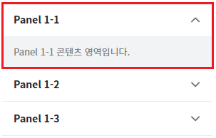
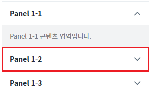
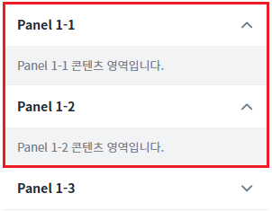
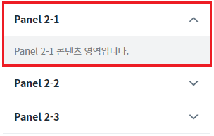
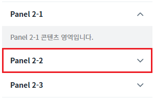
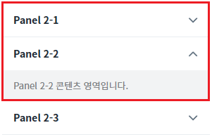
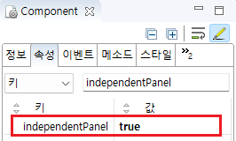

Accordion의 'independentPanel' 속성을 사용하여 각 패널이 독립적으로 열리고 닫히도록 설정한 예제입니다. 이 속성의 값을 'true'로 설정하면 각 패널이 독립적으로 열리고 닫힙니다.
이 예제의 Accordion은 'collapsible' 속성을 'true'로 설정하여 패널의 타이틀을 클릭할 때 패널의 컨텐츠가 열리고 닫힙니다. 이 속성의 기본 설정은 'false'이며, 패널의 타이틀을 클릭하면 패널의 컨텐츠가 열리는 단방향 동작입니다.
'independentPanel' 속성을 'true'로 설정
'independentPanel' 속성을 'false'로 설정
예제 영역 'independentPanel = "true"'에서 테스트합니다.1
STEP 1: 초기 상태를 확인합니다.
'Paner 1-1' 패널의 콘텐츠 영역이 열려있는 상태입니다.
Image 1.브라우저(Chrome) 실행 예시

2
STEP 2: 닫혀 있는 패널의 타이틀을 클릭합니다.
'Panel 1-2' 패널의 타이틀을 클릭합니다.
Image 2.브라우저(Chrome) 실행 예시

3
STEP 3: 실행 결과를 확인합니다.
'Panel 1-2' 패널의 콘텐츠가 열리고, 'Panel 1-1' 패널의 콘텐츠는 여전히 열린 상태를 유지합니다.
Image 3.브라우저(Chrome) 실행 예시

예제 영역 'independentPanel = "false"'에서 테스트합니다.1
STEP 1: 초기 상태를 확인합니다.
'Paner 2-1' 패널의 콘텐츠 영역이 열려있는 상태입니다.
Image 4.브라우저(Chrome) 실행 예시

2
STEP 2: 닫혀 있는 패널의 타이틀을 클릭합니다.
'Panel 2-2' 패널의 타이틀을 클릭합니다.
Image 5.브라우저(Chrome) 실행 예시

3
STEP 3: 실행 결과를 확인합니다.
'Panel 2-2' 패널의 콘텐츠가 열리고, 'Panel 2-1' 패널의 콘텐츠는 닫힙니다.
Image 6.브라우저(Chrome) 실행 예시

1
Accordion의 속성을 정의합니다.
[필수] independentPanel="true"
[default: false, true] 패널 클릭 시 다른 패널의 열림/닫힘 상태에 영향을 주지 않는 속성
[선택] collapsible
[default: false, true] 패널의 타이틀을 클릭할 경우, 패널이 닫힐 수 있도록 설정.
Image 7.웹스퀘어 스튜디오의 Component View 예시

Example 1.Source
<!-- accordion 의 소스 본문 예시 --> <w2:accordion independentPanel="true" id="acd_exam_2"> <!-- 중략 --> </w2:accordion>
independentPanel
collapsible